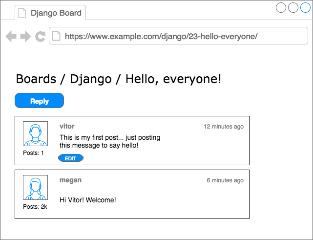

Introduction
Welcome to the second part of our Django Tutorial! In the previous lesson, we installed everything that we needed. Hopefully, you are all setup with Python 3.6 installed and Django 1.11 running inside a Virtual Environment. We already created the project we are going to play around. In this lesson, we are going to keep writing code in the same project.
In the next section, we are going to talk a little bit about the project we are going to develop, so to give you some context. Then after that, you are going to learn all the Django fundamentals: models, admin, views, templates, and URLs.
Hands on!
Web Board Project
I don’t know about you, but personally, I learn much more by seeing practical examples and code snippets. For me, it’s
difficult to process a concept where in the examples you read Class A and Class B, or when I see the classical
foo(bar) examples. I don’t want to do that with you.
So, before we get into the fun part, playing with models, views, and everything. Let’s just take a moment and discuss very briefly about this project we are going to develop.
If you already have experience with Web development and feel it’s too much detail, you can just skim through the pictures to have an idea what we are going to build and then jump to the Models section of this tutorial.
But if you are new to Web development, I highly suggest that you keep reading. It will give you some good insights on modeling and design of Web applications. Web development, and software development in general, is not just about coding.
Use Case Diagram
Our project is a discussion board (a forum). The whole idea is to maintain several boards, which will behave like categories. Then, inside a specific board, a user can start a new discussion by creating a new topic. In this topic, other users can engage in the discussion posting replies.
We will need to find a way to differentiate a regular user from an admin user because only the admins are supposed to create new boards. Below, an overview of our main use cases and the role of each type of user:

Figure 1: Use case diagram of the core functionalities offered by the Web Board
Class Diagram
From the Use Case Diagram, we can start thinking concerning the entities of our project. The entities are the models we will create, and it’s very closely related to the data our Django app will process.
For us to be able to implement the use cases described in the previous section, we will need to implement at least the following models: Board, Topic, Post, and User.

Figure 2: Draft of the class diagram of the Web Board
It’s also important to take the time to think about how do models will relate to each other. What the solid lines are telling us is that, in a Topic, we will need to have a field to identify which Board it belongs to. Similarly, the Post will need a field to represent which Topic it belongs so that we can list in the discussions only Posts created within a specific Topic. Finally, we will need fields in both the Topic to know who started the discussion and in the Post so we can identify who is posting the reply.
We could also have an association with the Board and the User model, so we could identify who created a given Board. But this information is not relevant for the application. There are other ways to track this information, you will see later on.
Now that we have the basic class representation, we have to think what kind of information each of those models will carry. This sort of thing can get complicated very easily. So try to focus on the important bits. The information that you need to start the development. Later on, we can improve the model using migrations, which you will see in great detail in the next tutorial.
But for now, this would be a basic representation of our models’ fields:

Figure 3: Class diagram emphasizing the relationship between the classes (models)
This class diagram has the emphasis on the relationship between the models. Those lines and arrows will eventually be translated into fields later on.
For the Board model, we will start with two fields: name and description. The name field has to be unique, so to avoid duplicated board names. The description is just to give a hint of what the board is all about.
The Topic model will be composed of four fields: subject, last update date which will be used to define the topics ordering, topic starter to identify the User who started the Topic, and a field called board to define which Board a specific Topic belongs to.
The Post model will have a message field, which will be used to store the text of the post replies, a created at date and time field mainly used to order the Posts within a Topic, an updated at date and time field to inform the Users when and if a given Post has been edited. Like the date and time fields, we will also have to reference the User model: created by and updated by.
Finally, the User model. In the class diagram, I only mentioned the fields username, password, email and is superuser flag because that’s pretty much all we are going to use for now. It’s important to note that we won’t need to create a User model because Django already comes with a built-in User model inside the contrib package. We are going to use it.
Regarding the multiplicity in the class diagram (the numbers 1, 0..*, etc.), here’s how you read it:
 A Topic must be associated with exactly one (
A Topic must be associated with exactly one (1) Board (which means it cannot be null), and a Board may be
associated with many Topics or none (0..*). Which means a Board may exist without a single Topic.
A Topic should have at least one Post (the starter Post), and it may also have many Posts (1..*). A
Post must be associated with one, and only one Topic (1).
 A Topic must have one, and only one User associated with: the topic starter User (
A Topic must have one, and only one User associated with: the topic starter User (1). And a User may
have many or none Topics (0..*).
 A Post must have one, and only one User associated with: created by (
A Post must have one, and only one User associated with: created by (1). A User may have many or none
Posts (0..*). The second association between Post and User is a direct association (see the arrow at
the end of the line), meaning we are interested only in one side of the relationship which is what User has edited
a given Post. It will be translated into the updated by field. The multiplicity says 0..1, meaning the
updated by field may be null (the Post wasn’t edited) and at most may be associated with only one User.
Another way to draw this class diagram is emphasizing the fields rather than in the relationship between the models:
Figure 4: Class diagram emphasizing the attributes (fields) of the classes (models)
The representation above is equivalent to the previous one, and it’s also closer to what we are going to design using the Django Models API. In this representation, we can see more clearly that in the Post model the associations topic, created by, and updated by became model fields. Another interesting thing to note is that in the Topic model we have now an operation (a class method) named posts(). We are going to achieve this by implementing a reverse relationship, where Django will automatically execute a query in the database to return a list of all the Posts that belongs to a specific Topic.
Alright, enough UML for now! To draw the diagrams presented in this section I used the StarUML tool.
Wireframes
After spending some time designing the application models, I like to create some wireframes to define what needs to be done and also to have a clear picture of where we are going.
Then based on the wireframes we can gain a deeper understanding of the entities involved in the application.
First thing, we need to show all the boards in the homepage:
Figure 5: Boards project wireframe homepage listing all the available boards.
If the user clicks on a link, say in the Django board, it should list all the topics:

Figure 6: Boards project wireframe listing all topics in the Django board.
Here we have two main paths: either the user clicks on the “new topic” button to create a new topic, or the user clicks on a topic to see or engage in a discussion.
The “new topic” screen:

Figure 7: New topic screen
Now the topic screen, displaying the posts and discussions:

Figure 8: Topic posts listing screen
If the user clicks on the reply button, they will see the screen below, with a summary of the posts in reverse order (newest first):

Figure 9: Reply topic screen
To draw your wireframes you can use the draw.io service, it’s free.
Models
The models are basically a representation of your application’s database layout. What we are going to do in this
section is create the Django representation of the classes we modeled in the previous section: Board, Topic,
and Post. The User model is already defined inside a built-in app named auth, which is listed in our
INSTALLED_APPS configuration under the namespace django.contrib.auth.
We will do all the work inside the boards/models.py file. Here is how we represent our class diagram (see Figure 4). in a Django application:
from django.db import models
from django.contrib.auth.models import User
class Board(models.Model):
name = models.CharField(max_length=30, unique=True)
description = models.CharField(max_length=100)
class Topic(models.Model):
subject = models.CharField(max_length=255)
last_updated = models.DateTimeField(auto_now_add=True)
board = models.ForeignKey(Board, related_name='topics')
starter = models.ForeignKey(User, related_name='topics')
class Post(models.Model):
message = models.TextField(max_length=4000)
topic = models.ForeignKey(Topic, related_name='posts')
created_at = models.DateTimeField(auto_now_add=True)
updated_at = models.DateTimeField(null=True)
created_by = models.ForeignKey(User, related_name='posts')
updated_by = models.ForeignKey(User, null=True, related_name='+')All models are subclass of the django.db.models.Model class. Each class will be transformed into database tables. Each field is represented by instances of django.db.models.Field subclasses (built-in Django core) and will be translated into database columns.
The fields CharField, DateTimeField, etc., are all subclasses of django.db.models.Field and they come included
in the Django core – ready to be used.
Here we are only using CharField, TextField, DateTimeField, and ForeignKey fields to define our models. But
Django offers a wide range of options to represent different types of data, such as IntegerField, BooleanField,
DecimalField, and many others. We will refer to them as we need.
Some fields have required arguments, such as the CharField. We should always set a max_length. This information
will be used to create the database column. Django needs to know how big the database column needs to be. The
max_length parameter will also be used by the Django Forms API, to validate user input. More on that later.
In the Board model definition, more specifically in the name field, we are also setting the parameter
unique=True, as the name suggests, it will enforce the uniqueness of the field at the database level.
In the Post model, the created_at field has an optional parameter, the auto_now_add set to True. This will
instruct Django to set the current date and time when a Post object is created.
One way to create a relationship between the models is by using the ForeignKey field. It will create a link between
the models and create a proper relationship at the database level. The ForeignKey field expects a positional
parameter with the reference to the model it will relate to.
For example, in the Topic model, the board field is a ForeignKey to the Board model. It is telling Django that
a Topic instance relates to only one Board instance. The related_name parameter will be used to create a
reverse relationship where the Board instances will have access a list of Topic instances that belong to it.
Django automatically creates this reverse relationship – the related_name is optional. But if we don’t set a name for
it, Django will generate it with the name: (class_name)_set. For example, in the Board model, the Topic instances
would be available under the topic_set property. Instead, we simply renamed it to topics, to make it feel more
natural.
In the Post model, the updated_by field sets the related_name='+'. This instructs Django that we don’t need this
reverse relationship, so it will ignore it.
Below you can see the comparison between the class diagram and the source code to generate the models with Django. The green lines represent how we are handling the reverse relationships.

At this point, you may be asking yourself: “what about primary keys/IDs”? If we don’t specify a primary key for a model, Django will automatically generate it for us. So we are good for now. In the next section, you will see better how it works.
Migrating the Models
The next step is to tell Django to create the database so we can start using it.
Open the Terminal Command Line Tools, activate the virtual environment, go to the folder where the manage.py file is, and run the commands below:
python manage.py makemigrationsAs an output you will get something like this:
Migrations for 'boards':
boards/migrations/0001_initial.py
- Create model Board
- Create model Post
- Create model Topic
- Add field topic to post
- Add field updated_by to postAt this point, Django created a file named 0001_initial.py inside the boards/migrations directory. It represents the current state of our application’s models. In the next step, Django will use this file to create the tables and columns.
The migration files are translated into SQL statements. If you are familiar with SQL, you can run the following command to inspect the SQL instructions that will be executed in the database:
python manage.py sqlmigrate boards 0001If you’re not familiar with SQL, don’t worry. We won’t be working directly with SQL in this tutorial series. All the work will be done using just the Django ORM, which is an abstraction layer that communicates with the database.
The next step now is to apply the migration we generated to the database:
python manage.py migrateThe output should be something like this:
Operations to perform:
Apply all migrations: admin, auth, boards, contenttypes, sessions
Running migrations:
Applying contenttypes.0001_initial... OK
Applying auth.0001_initial... OK
Applying admin.0001_initial... OK
Applying admin.0002_logentry_remove_auto_add... OK
Applying contenttypes.0002_remove_content_type_name... OK
Applying auth.0002_alter_permission_name_max_length... OK
Applying auth.0003_alter_user_email_max_length... OK
Applying auth.0004_alter_user_username_opts... OK
Applying auth.0005_alter_user_last_login_null... OK
Applying auth.0006_require_contenttypes_0002... OK
Applying auth.0007_alter_validators_add_error_messages... OK
Applying auth.0008_alter_user_username_max_length... OK
Applying boards.0001_initial... OK
Applying sessions.0001_initial... OKBecause this is the first time we are migrating the database, the migrate command also applied the existing migration
files from the Django contrib apps, listed in the INSTALLED_APPS. This is expected.
The line Applying boards.0001_initial... OK is the migration we generated in the previous step.
That’s it! Our database is ready to be used.
Note: It's important to note that SQLite is a production-quality database. SQLite is used by many companies across thousands of products, like all Android and iOS devices, all major Web browsers, Windows 10, macOS, etc.
It's just not suitable for all cases. SQLite doesn't compare with databases like MySQL, PostgreSQL or Oracle. High-volume websites, write-intensive applications, very large datasets, high concurrency, are some situations that will eventually result in a problem by using SQLite.
We are going to use SQLite during the development of our project because it's convenient and we won't need to install anything else. When we deploy our project to production, we will switch to PostgreSQL. For simple websites this work fine. But for complex websites, it's advisable to use the same database for development and production.
Experimenting with the Models API
One of the great advantages of developing with Python is the interactive shell. I use it all the time. It’s a quick way to try things out and experiment libraries and APIs.
You can start a Python shell with our project loaded using the manage.py utility:
python manage.py shellPython 3.6.2 (default, Jul 17 2017, 16:44:45)
[GCC 4.2.1 Compatible Apple LLVM 8.1.0 (clang-802.0.42)] on darwin
Type "help", "copyright", "credits" or "license" for more information.
(InteractiveConsole)
>>>Python 3.6.2 (v3.6.2:5fd33b5, Jul 8 2017, 04:57:36) [MSC v.1900 64 bit (AMD64)] on win32
Type "help", "copyright", "credits" or "license" for more information.
(InteractiveConsole)
>>>Python 3.6.2 (default, Jul 17 2017, 23:14:31)
[GCC 5.4.0 20160609] on linux
Type "help", "copyright", "credits" or "license" for more information.
(InteractiveConsole)
>>>This is very similar to calling the interactive console just by typing python, except when we use
python manage.py shell, we are adding our project to the sys.path and loading Django. That means we can import
our models and any other resource within the project and play with it.
Let’s start by importing the Board class:
from boards.models import BoardTo create a new board object, we can do the following:
board = Board(name='Django', description='This is a board about Django.')To persist this object in the database, we have to call the save method:
board.save()The save method is used both to create and update objects. Here Django created a new object because the Board
instance had no id. After saving it for the first time, Django will set the id automatically:
board.id
1You can access the rest of the fields as Python attributes:
board.name
'Django'board.description
'This is a board about Django.'To update a value we could do:
board.description = 'Django discussion board.'
board.save()Every Django model comes with a special attribute; we call it a Model Manager. You can access it via the Python
attribute objects. It is used mainly to execute queries in the database. For example, we could use it to directly
create a new Board object:
board = Board.objects.create(name='Python', description='General discussion about Python.')board.id
2board.name
'Python'So, right now we have two boards. We can use the objects to list all existing boards in the database:
Board.objects.all()
<QuerySet [<Board: Board object>, <Board: Board object>]>The result was a QuerySet. We will learn more about that later on. Basically, it’s a list of objects from the
database. We can see that we have two objects, but we can only read Board object. That’s because we haven’t defined
the __str__ method in the Board model.
The __str__ method is a String representation of an object. We can use the board name to represent it.
First, exit the interactive console:
exit()Now edit the models.py file inside the boards app:
class Board(models.Model):
name = models.CharField(max_length=30, unique=True)
description = models.CharField(max_length=100)
def __str__(self):
return self.nameLet’s try the query again. Open the interactive console again:
python manage.py shellfrom boards.models import Board
Board.objects.all()
<QuerySet [<Board: Django>, <Board: Python>]>Much better, right?
We can treat this QuerySet like a list. Let’s say we wanted to iterate over it and print the description of each board:
boards_list = Board.objects.all()
for board in boards_list:
print(board.description)The result would be:
Django discussion board.
General discussion about Python.Similarly, we can use the model Manager to query the database and return a single object. For that we use the get
method:
django_board = Board.objects.get(id=1)
django_board.name
'Django'But we have to be careful with this kind of operation. If we try to get an object that doesn’t exist, for example, a
board with id=3, it will raise an exception:
board = Board.objects.get(id=3)
boards.models.DoesNotExist: Board matching query does not exist.We can use the get method with any model field, but preferably use a field that can uniquely identify an object.
Otherwise, the query may return more than one object, which will cause an exception.
Board.objects.get(name='Django')
<Board: Django>Note that the query is case sensitive, a lower case “django” would not match:
Board.objects.get(name='django')
boards.models.DoesNotExist: Board matching query does not exist.Summary of Model’s Operations
Find below a summary of the methods and operations we learned in this section, using the Board model as a reference. Uppercase Board refers to the class, lowercase board refers to an instance (or object) of the Board model class:
| Operation | Code sample |
|---|---|
| Create an object without saving | board = Board() |
| Save an object (create or update) | board.save() |
| Create and save an object in the database | Board.objects.create(name='...', description='...') |
| List all objects | Board.objects.all() |
| Get a single object, identified by a field | Board.objects.get(id=1) |
In the next section, we are going to start writing views and displaying our boards in HTML pages.
Views, Templates, and Static Files
At the moment we already have a view named home displaying “Hello, World!” in the homepage of our application.
myproject/urls.py
from django.conf.urls import url
from django.contrib import admin
from boards import views
urlpatterns = [
url(r'^$', views.home, name='home'),
url(r'^admin/', admin.site.urls),
]boards/views.py
from django.http import HttpResponse
def home(request):
return HttpResponse('Hello, World!')We can use this as our starting point. If you recall our wireframes, the Figure 5 showed how the homepage should look like. What we want to do is display a list of boards in a table alongside with some other information.
The first thing to do is import the Board model and list all the existing boards:
boards/views.py
from django.http import HttpResponse
from .models import Board
def home(request):
boards = Board.objects.all()
boards_names = list()
for board in boards:
boards_names.append(board.name)
response_html = '<br>'.join(boards_names)
return HttpResponse(response_html)And the result would be this simple HTML page:
But let’s stop right here. We are not going very far rendering HTML like this. For this simple view, all we need is a list of boards; then the rendering part is a job for the Django Template Engine.
Django Template Engine Setup
Create a new folder named templates alongside with the boards and mysite folders:
myproject/
|-- myproject/
| |-- boards/
| |-- myproject/
| |-- templates/ <-- here!
| +-- manage.py
+-- venv/Now within the templates folder, create an HTML file named home.html:
templates/home.html
<!DOCTYPE html>
<html>
<head>
<meta charset="utf-8">
<title>Boards</title>
</head>
<body>
<h1>Boards</h1>
{% for board in boards %}
{{ board.name }} <br>
{% endfor %}
</body>
</html>In the example above we are mixing raw HTML with some special tags {% for ... in ... %} and
{{ variable }}. They are part of the Django Template Language. The example above shows how to
iterate over a list of objects using a for. The {{ board.name }} renders the name of the
board in the HTML template, generating a dynamic HTML document.
Before we can use this HTML page, we have to tell Django where to find our application’s templates.
Open the settings.py inside the myproject directory and search for the TEMPLATES variable and set the DIRS
key to os.path.join(BASE_DIR, 'templates'):
TEMPLATES = [
{
'BACKEND': 'django.template.backends.django.DjangoTemplates',
'DIRS': [
os.path.join(BASE_DIR, 'templates')
],
'APP_DIRS': True,
'OPTIONS': {
'context_processors': [
'django.template.context_processors.debug',
'django.template.context_processors.request',
'django.contrib.auth.context_processors.auth',
'django.contrib.messages.context_processors.messages',
],
},
},
]Basically what this line is doing is finding the full path of your project directory and appending “/templates” to it.
We can debug this using the Python shell:
python manage.py shellfrom django.conf import settings
settings.BASE_DIR
'/Users/vitorfs/Development/myproject'
import os
os.path.join(settings.BASE_DIR, 'templates')
'/Users/vitorfs/Development/myproject/templates'See? It’s just pointing to the templates folder we created in the previous steps.
Now we can update our home view:
boards/views.py
from django.shortcuts import render
from .models import Board
def home(request):
boards = Board.objects.all()
return render(request, 'home.html', {'boards': boards})The resulting HTML:
We can improve the HTML template to use a table instead:
templates/home.html
<!DOCTYPE html>
<html>
<head>
<meta charset="utf-8">
<title>Boards</title>
</head>
<body>
<h1>Boards</h1>
<table border="1">
<thead>
<tr>
<th>Board</th>
<th>Posts</th>
<th>Topics</th>
<th>Last Post</th>
</tr>
</thead>
<tbody>
{% for board in boards %}
<tr>
<td>
{{ board.name }}<br>
<small style="color: #888">{{ board.description }}</small>
</td>
<td>0</td>
<td>0</td>
<td></td>
</tr>
{% endfor %}
</tbody>
</table>
</body>
</html>Testing the Homepage
This is going to be a recurrent subject, and we are going to explore together different concepts and strategies throughout the whole tutorial series.
Let’s write our first test. For now, we will be working in the tests.py file inside the boards app:
boards/tests.py
from django.core.urlresolvers import reverse
from django.test import TestCase
class HomeTests(TestCase):
def test_home_view_status_code(self):
url = reverse('home')
response = self.client.get(url)
self.assertEquals(response.status_code, 200)This is a very simple test case but extremely useful. We are testing the status code of the response. The status code 200 means success.
We can check the status code of the response in the console:
If there were an uncaught exception, syntax error, or anything, Django would return a status code 500 instead, which means Internal Server Error. Now, imagine our application has 100 views. If we wrote just this simple test for all our views, with just one command, we would be able to test if all views are returning a success code, so the user does not see any error message anywhere. Without automate tests, we would need to check each page, one by one.
To execute the Django’s test suite:
python manage.py testCreating test database for alias 'default'...
System check identified no issues (0 silenced).
.
----------------------------------------------------------------------
Ran 1 test in 0.041s
OK
Destroying test database for alias 'default'...Now we can test if Django returned the correct view function for the requested URL. This is also a useful test because as we progress with the development, you will see that the urls.py module can get very big and complex. The URL conf is all about resolving regex. There are some cases where we have a very permissive URL, so Django can end up returning the wrong view function.
Here’s how we do it:
boards/tests.py
from django.core.urlresolvers import reverse
from django.urls import resolve
from django.test import TestCase
from .views import home
class HomeTests(TestCase):
def test_home_view_status_code(self):
url = reverse('home')
response = self.client.get(url)
self.assertEquals(response.status_code, 200)
def test_home_url_resolves_home_view(self):
view = resolve('/')
self.assertEquals(view.func, home)In the second test, we are making use of the resolve function. Django uses it to match a requested URL with a list of
URLs listed in the urls.py module. This test will make sure the URL /, which is the root URL, is returning the
home view.
Test it again:
python manage.py testCreating test database for alias 'default'...
System check identified no issues (0 silenced).
..
----------------------------------------------------------------------
Ran 2 tests in 0.027s
OK
Destroying test database for alias 'default'...To see more detail about the test execution, set the verbosity to a higher level:
python manage.py test --verbosity=2Creating test database for alias 'default' ('file:memorydb_default?mode=memory&cache=shared')...
Operations to perform:
Synchronize unmigrated apps: messages, staticfiles
Apply all migrations: admin, auth, boards, contenttypes, sessions
Synchronizing apps without migrations:
Creating tables...
Running deferred SQL...
Running migrations:
Applying contenttypes.0001_initial... OK
Applying auth.0001_initial... OK
Applying admin.0001_initial... OK
Applying admin.0002_logentry_remove_auto_add... OK
Applying contenttypes.0002_remove_content_type_name... OK
Applying auth.0002_alter_permission_name_max_length... OK
Applying auth.0003_alter_user_email_max_length... OK
Applying auth.0004_alter_user_username_opts... OK
Applying auth.0005_alter_user_last_login_null... OK
Applying auth.0006_require_contenttypes_0002... OK
Applying auth.0007_alter_validators_add_error_messages... OK
Applying auth.0008_alter_user_username_max_length... OK
Applying boards.0001_initial... OK
Applying sessions.0001_initial... OK
System check identified no issues (0 silenced).
test_home_url_resolves_home_view (boards.tests.HomeTests) ... ok
test_home_view_status_code (boards.tests.HomeTests) ... ok
----------------------------------------------------------------------
Ran 2 tests in 0.017s
OK
Destroying test database for alias 'default' ('file:memorydb_default?mode=memory&cache=shared')...Verbosity determines the amount of notification and debug information that will be printed to the console; 0 is no output, 1 is normal output, and 2 is verbose output.
Static Files Setup
Static files are the CSS, JavaScripts, Fonts, Images, or any other resources we may use to compose the user interface.
As it is, Django doesn’t serve those files. Except during the development process, so to make our lives easier.
But Django provides some features to help us manage the static files. Those features are available in the
django.contrib.staticfiles application already listed in the INSTALLED_APPS configuration.
With so many front-end component libraries available, there’s no reason for us keep rendering basic HTML documents. We can easily add Bootstrap 4 to our project. Bootstrap is an open source toolkit for developing with HTML, CSS, and JavaScript.
In the project root directory, alongside with the boards, templates, and myproject folders, create a new folder named static, and within the static folder create another one named css:
myproject/
|-- myproject/
| |-- boards/
| |-- myproject/
| |-- templates/
| |-- static/ <-- here
| | +-- css/ <-- and here
| +-- manage.py
+-- venv/Go to getbootstrap.com and download the latest version:
Download the Compiled CSS and JS version.
In your computer, extract the bootstrap-4.0.0-beta-dist.zip file you downloaded from the Bootstrap website, copy the file css/bootstrap.min.css to our project’s css folder:
myproject/
|-- myproject/
| |-- boards/
| |-- myproject/
| |-- templates/
| |-- static/
| | +-- css/
| | +-- bootstrap.min.css <-- here
| +-- manage.py
+-- venv/The next step is to instruct Django where to find the static files. Open the settings.py, scroll to the bottom
of the file and just after the STATIC_URL, add the following:
STATIC_URL = '/static/'
STATICFILES_DIRS = [
os.path.join(BASE_DIR, 'static'),
]Same thing as the TEMPLATES directory, remember?
Now we have to load the static files (the Bootstrap CSS file) in our template:
templates/home.html
{% load static %}<!DOCTYPE html>
<html>
<head>
<meta charset="utf-8">
<title>Boards</title>
<link rel="stylesheet" href="{% static 'css/bootstrap.min.css' %}">
</head>
<body>
<!-- body suppressed for brevity ... -->
</body>
</html>First we load the Static Files App template tags by using the {% load static %} in the beginning
of the template.
The template tag {% static %} is used to compose the URL where the resource lives. In this case,
the {% static 'css/bootstrap.min.css' %} will return /static/css/bootstrap.min.css, which is
equivalent to http://127.0.0.1:8000/static/css/bootstrap.min.css.
The {% static %} template tag uses the STATIC_URL configuration in the settings.py to
compose the final URL. For example, if you hosted your static files in a subdomain like
https://static.example.com/, we would set the STATIC_URL=https://static.example.com/ then the
{% static 'css/bootstrap.min.css' %} would return
https://static.example.com/css/bootstrap.min.css.
If none of this makes sense for you at the moment, don’t worry. Just remember to use the {% static %}
whenever you need to refer to a CSS, JavaScript or image file. Later on, when we start working with Deployment, we will
discuss more it. For now, we are all set up.
Refreshing the page 127.0.0.1:8000 we can see it worked:
Now we can edit the template so to take advantage of the Bootstrap CSS:
{% load static %}<!DOCTYPE html>
<html>
<head>
<meta charset="utf-8">
<title>Boards</title>
<link rel="stylesheet" href="{% static 'css/bootstrap.min.css' %}">
</head>
<body>
<div class="container">
<ol class="breadcrumb my-4">
<li class="breadcrumb-item active">Boards</li>
</ol>
<table class="table">
<thead class="thead-inverse">
<tr>
<th>Board</th>
<th>Posts</th>
<th>Topics</th>
<th>Last Post</th>
</tr>
</thead>
<tbody>
{% for board in boards %}
<tr>
<td>
{{ board.name }}
<small class="text-muted d-block">{{ board.description }}</small>
</td>
<td class="align-middle">0</td>
<td class="align-middle">0</td>
<td></td>
</tr>
{% endfor %}
</tbody>
</table>
</div>
</body>
</html>The result now:
So far we are adding new boards using the interactive console (python manage.py shell). But we need a better way to
do it. In the next section, we are going to implement an admin interface for the website administrator manage it.
Introduction to Django Admin
When we start a new project, Django already comes configured with the Django Admin listed in the INSTALLED_APPS.
A good use case of the Django Admin is for example in a blog; it can be used by the authors to write and publish articles. Another example is an e-commerce website, where the staff members can create, edit, delete products.
For now, we are going to configure the Django Admin to maintain our application’s boards.
Let’s start by creating an administrator account:
python manage.py createsuperuserFollow the instructions:
Username (leave blank to use 'vitorfs'): admin
Email address: admin@example.com
Password:
Password (again):
Superuser created successfully.Now open the URL in a web browser: http://127.0.0.1:8000/admin/
Enter the username and password to log into the administration interface:
It already comes with some features configured. Here we can add Users and Groups to manage permissions. We will explore more of those concepts later on.
To add the Board model is very straightforward. Open the admin.py file in the boards directory, and add the following code:
boards/admin.py
from django.contrib import admin
from .models import Board
admin.site.register(Board)Save the admin.py file, and refresh the page on your web browser:
And that’s it! It’s ready to be used. Click on the Boards link to see the list of existing boards:
We can add a new board by clicking on the Add Board button:
Click on the save button:
We can check if everything is working be opening the http://127.0.0.1:8000 URL:
Conclusions
In this tutorial, we explored many new concepts. We defined some requirements for our project, created the first models, migrated the database, started playing with the Models API. We created our very first view and wrote some unit tests. We also configured the Django Template Engine, Static Files, and added the Bootstrap 4 library to the project. Finally, we had a very brief introduction the Django Admin interface.
I hope you enjoyed the second part of this tutorial series! The third part is coming out next week, on Sep 18, 2017. In the next part, we are going to explore Django’s URL routing, the forms API, reusable templates, and more testing. If you would like to get notified when the third part is out, you can subscribe to our mailing list.
The source code of the project is available on GitHub. The current state of the project can be found under the release tag v0.2-lw. The link below will take you to the right place:
https://github.com/sibtc/django-beginners-guide/tree/v0.2-lw


 How to Extend Django User Model
How to Extend Django User Model
 How to Setup a SSL Certificate on Nginx for a Django Application
How to Setup a SSL Certificate on Nginx for a Django Application
 How to Deploy a Django Application to Digital Ocean
How to Deploy a Django Application to Digital Ocean